FuzzBench: 4-branch-15m-10trials-random report
(experiment incomplete/still running...)
warning
Please consider this as a preliminary report to
demonstrate the capabilities of FuzzBench. While we have
tried our best, we have not confirmed that we configured
everything correctly. We are hoping to work together
with the community to validate results and improve the
set of fuzzers, benchmarks, and their configurations in
the future.
See FAQ
for more details.
experiment summary
We show two different aggregate (cross-benchmark) rankings of fuzzers. The first is based on the average of per-benchmarks scores, where the score represents the percentage of the highest reached median code-coverage on a given benchmark (higher value is better). The second ranking shows the average rank of fuzzers, after we rank them on each benchmark according to their median reached code-covereges (lower value is better).By avg. score
| average normalized score | |
|---|---|
| fuzzer | |
| aflplusplus | 95.78 |
| libfuzzer | 94.57 |
By avg. rank
| average rank | |
|---|---|
| fuzzer | |
| libfuzzer | 1.33 |
| aflplusplus | 1.67 |
-
Critical difference diagramThe diagram visualizes the average rank of fuzzers (second ranking above) while showing the significance of the differences as well. What is considered a "critical difference" (CD) is based on the Friedman/Nemenyi post-hoc test. See more in the documentation.
Note: If a fuzzer does not support all benchmarks, its ranking as shown in this diagram can be lower than it should be. So please check the list of supported benchmarks for the fuzzer(s) of your interest. The list could be specified in the fuzzer's README.md like this.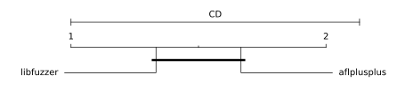
-
Median relative code-coverages on each benchmark
Note: The relative coverage summary table shows the median relative performance of each fuzzer to the experiment maximum. Thus the highest relative performance may not be 100%.
trial_relative_coverage = trial_coverage / experiment_max_coverage
aflplusplus libfuzzer FuzzerMedian 73.98 76.57 FuzzerMean 74.64 72.63 bloaty_fuzz_target 58.44 62.66 libjpeg-turbo-07-2017 91.48 76.57 sqlite3_ossfuzz 73.98 78.65 - Fuzzers are sorted by "FuzzerMean" (average median relative coverage), highest on the left.
- Green background = highest relative median coverage.
- Blue gradient background = greater than 95% relative median coverage.
bloaty_fuzz_target summary
Ranking by median reached code coverage
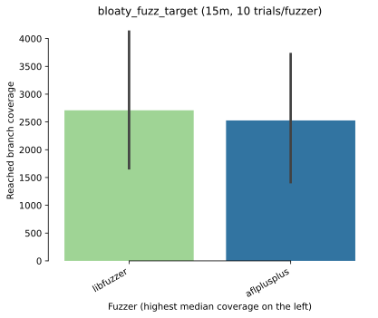Reached code coverage distribution
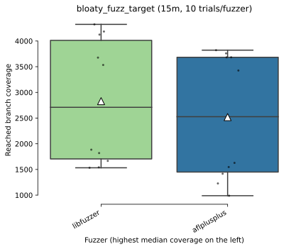Mean code coverage growth over time
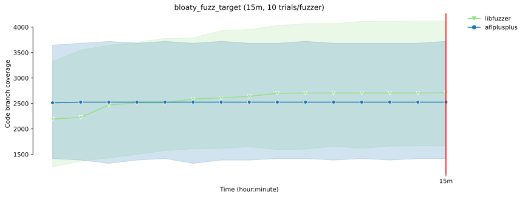Mean code coverage growth over time

* The error bands show the 95% confidence interval
around the mean code coverage.
-
Sample statistics and statistical significance (code coverage)
Code coverage sample statistics
count mean std min 25% median 75% max fuzzer time libfuzzer 900 10.0 2829.1 1227.778975 1533.0 1705.0 2709.5 4013.00 4324.0 aflplusplus 900 10.0 2518.4 1235.282532 989.0 1449.5 2527.0 3683.75 3822.0
Vargha-Delaney A12 measure 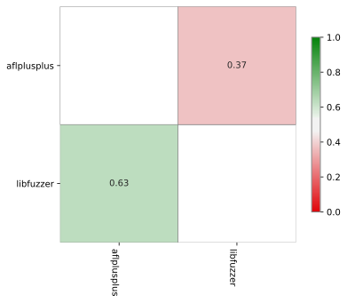 The table summarizes the A12 values from the pairwise Vargha-Delaney A measure of effect size. Green cells indicate the probability the fuzzer in the row will outperform the fuzzer in the column.
Mann-Whitney U test 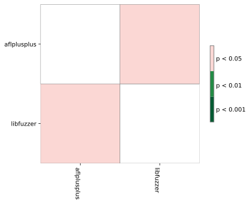 The table summarizes the p values of pairwise Mann-Whitney U tests. Green cells indicate that the reached coverage distribution of a given fuzzer pair is significantly different.
libjpeg-turbo-07-2017 summary
Ranking by median reached code coverage
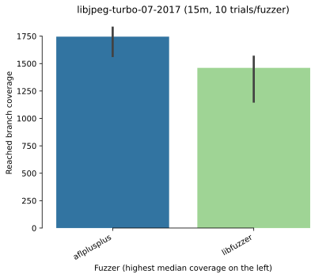Reached code coverage distribution
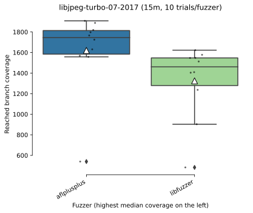Mean code coverage growth over time
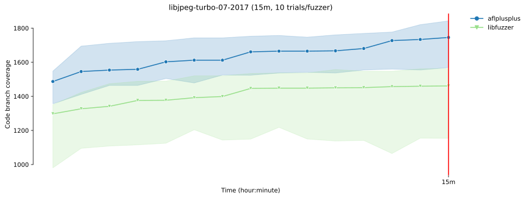Mean code coverage growth over time
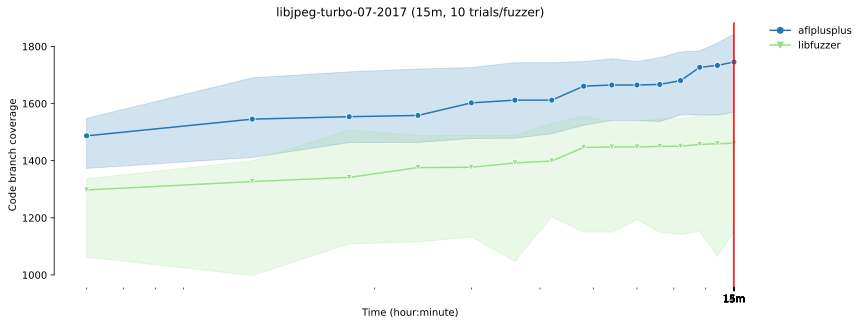
* The error bands show the 95% confidence interval
around the mean code coverage.
-
Sample statistics and statistical significance (code coverage)
Code coverage sample statistics
count mean std min 25% median 75% max fuzzer time aflplusplus 900 10.0 1620.1 398.748723 540.0 1584.50 1745.5 1813.50 1908.0 libfuzzer 900 10.0 1324.5 364.425957 483.0 1278.75 1461.0 1547.75 1623.0
Vargha-Delaney A12 measure 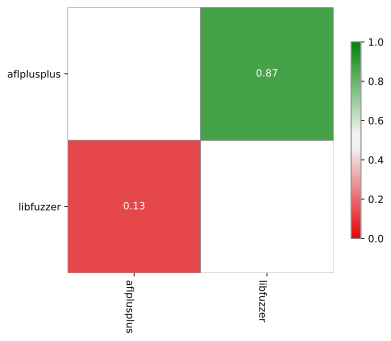 The table summarizes the A12 values from the pairwise Vargha-Delaney A measure of effect size. Green cells indicate the probability the fuzzer in the row will outperform the fuzzer in the column.
Mann-Whitney U test 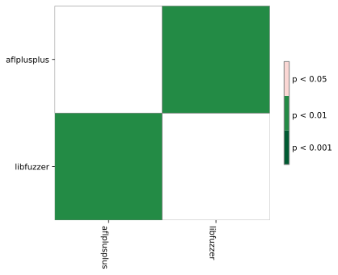 The table summarizes the p values of pairwise Mann-Whitney U tests. Green cells indicate that the reached coverage distribution of a given fuzzer pair is significantly different.
sqlite3_ossfuzz summary
Ranking by median reached code coverage
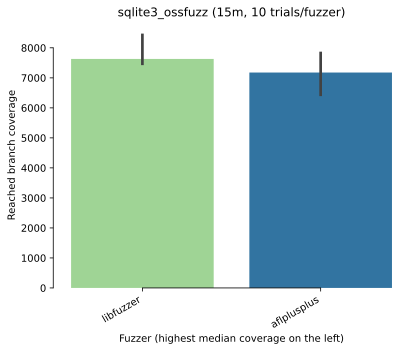Reached code coverage distribution
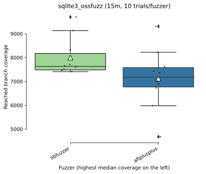Mean code coverage growth over time
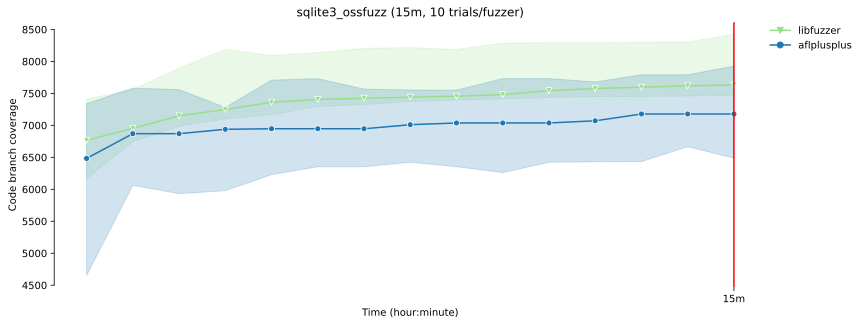Mean code coverage growth over time
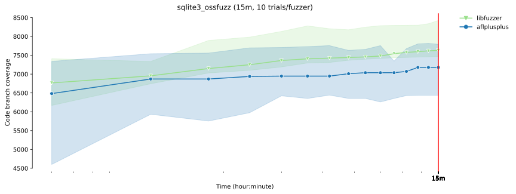
* The error bands show the 95% confidence interval
around the mean code coverage.
-
Sample statistics and statistical significance (code coverage)
Code coverage sample statistics
count mean std min 25% median 75% max fuzzer time libfuzzer 900 10.0 8001.5 801.850256 7410.0 7483.5 7631.0 8175.00 9702.0 aflplusplus 900 10.0 7122.7 1243.387671 4678.0 6768.5 7178.0 7579.25 9311.0
Vargha-Delaney A12 measure 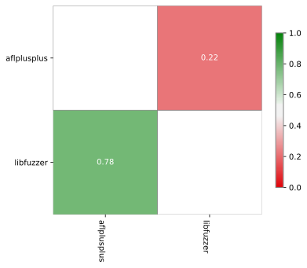 The table summarizes the A12 values from the pairwise Vargha-Delaney A measure of effect size. Green cells indicate the probability the fuzzer in the row will outperform the fuzzer in the column.
Mann-Whitney U test The table summarizes the p values of pairwise Mann-Whitney U tests. Green cells indicate that the reached coverage distribution of a given fuzzer pair is significantly different.
experiment data
You can download the raw data for this report here.Check out the documentation on how to create customized reports using this data. Also see some example Colab notebooks for doing custom analysis on the data here.
The experiment was conducted using this FuzzBench commit: 9ad8e5ae0f763ff0cfc43f407b5b50bf5c1f6465
To reproduce this experiment run the following commands in your FuzzBench repo:
# Check out the right commit.
git checkout 9ad8e5ae0f763ff0cfc43f407b5b50bf5c1f6465
# Download the internal config file.
curl https://storage.googleapis.com//local/pfm/out/experiment-data/4-branch-15m-10trials-random/input/config/experiment.yaml > /tmp/experiment-config.yaml
make install-dependencies
# Launch the experiment using paramters from the internal config file.
PYTHONPATH=. python experiment/reproduce_experiment.py -c /tmp/experiment-config.yaml -e <new_experiment_name>
Experiment Description:
(None,)